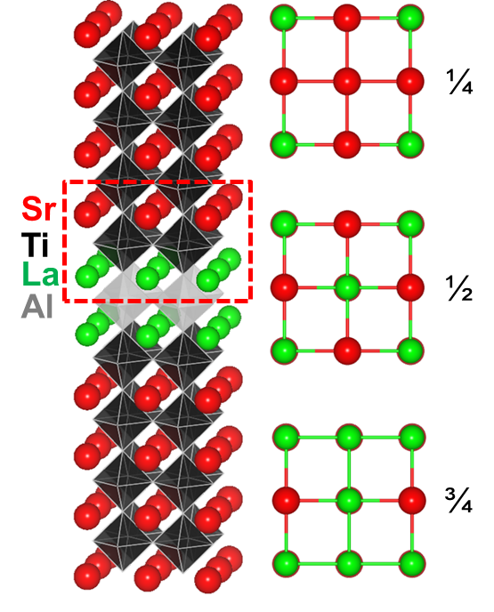
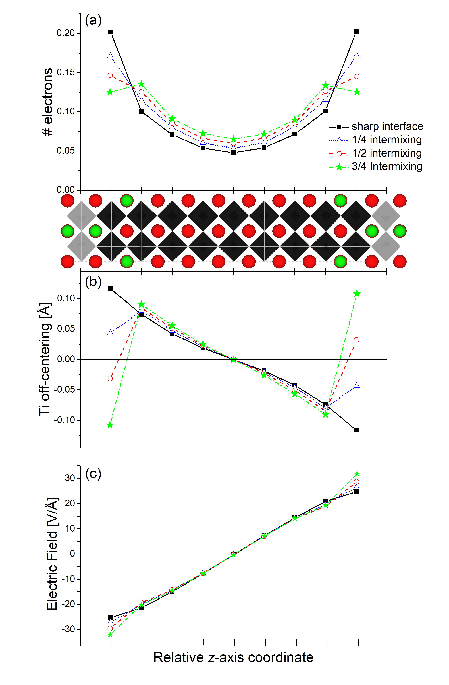
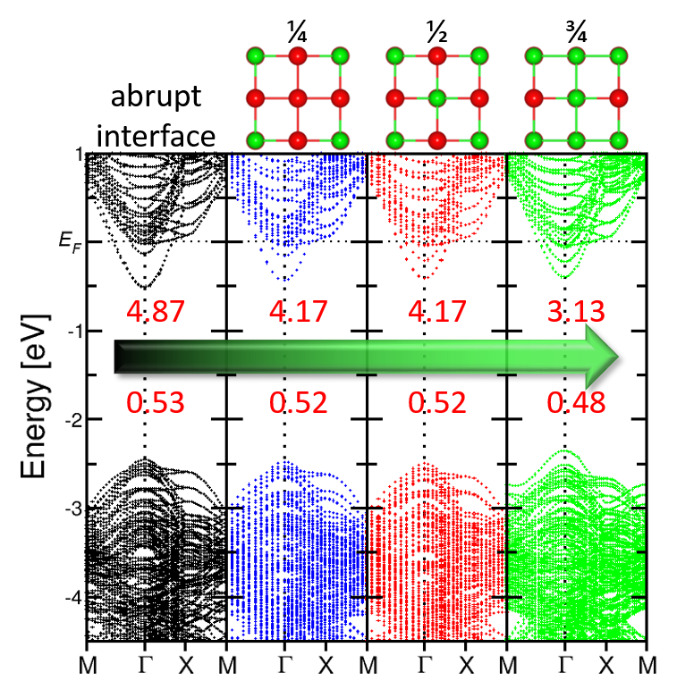
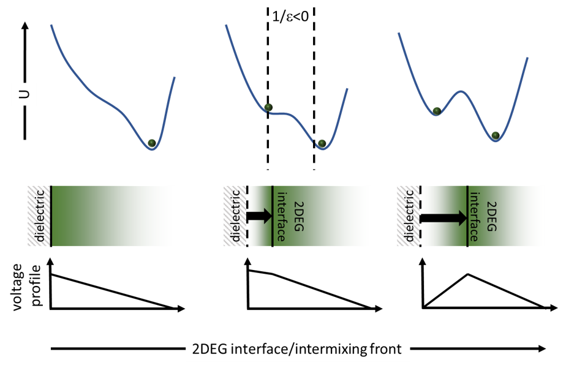

Anomalousdielectricresponseatintermixedoxideheterointerfaces ValentinoR.Cooper, 1, ∗ HoulongL.Zhuang, LipengZhang, P.Ganesh, HaixuanXu, andP.R.C.Kent 2,4 MaterialsScienceandTechnologyDivision,OakRidgeNationalLaboratory,OakRidge,TN37831 CenterforNanophaseMaterialsSciences,OakRidgeNationalLaboratory,OakRidge,Tennessee37831,USA DepartmentofMaterialsScienceandEngineering, TheUniversityofTennessee,Knoxville,Tennessee37996,USA ComputerScienceandMathematicsDivision,OakRidgeNationalLaboratory,OakRidge,Tennessee37831,USA (Dated:June25,2018) Two-dimensionalchargecarrieraccumulation atoxideheterointerfacespresentsaparadigm shiftforoxideelectronics.Likeacapacitor,inter- facialchargebuildupcouplestoanelectricfield acrossthedielectricmedium.Topreventtheso- calledpolarcatastrophe,severalchargescreen- ingmechanismsemerge,includingpolardistor- tionsandinterfacialintermixingwhichreducethe sharpnessoftheinterface.Here,weexaminehow atomicintermixingatoxideinterfacesaffectthe balancebetweenpolardistortionsandelectricpo- tentialacrossthedielectricmedium.Wefind thatintermixingmovesthepeakchargedistribu- tionawayfromtheoxide/oxideinterface;thereby changingthedirectionofpolardistortionsaway fromthisboundarywithminimaleffectonthe electricfield.Thisopposingelectricfieldandpo- lardistortionsisequivalenttothetransientphase transitiontippingpointobservedindoublewell ferroelectrics;resultinginananomalousdielectric response–apossiblesignatureoflocalnegative differentialcapacitance,withimplicationsforde- signingdissipationlessoxideelectronics. Advancesinthinfilmgrowthtechniques,whichal- lowforpreciselayer-by-layergrowthofepitaxialma- terials,haveopenedthedoortonumerousdiscov- eries,whichhavenotbeenachievablethroughbulk synthesistechniques.Aprominentexampleisthe emergentphenomena[1]reportedat AB O perovskite oxideheterointerfacessuchas2DEGs,[2–7]interfacial superconductivity[8]andnovelmagneticproperties.[9, 10]However,despitetheunprecedentedcontrol,itis knownthatsomeinterfacesareinherentlypronetointer- facialintermixingandthustheproductionofclean/sharp interfacesmaynotbepossible.Nakagawaandco-workers ∗ coopervr@ornl.gov; ThismanuscripthasbeenwrittenbyUT-Battelle,LLCunder ContractNo.DE-AC05-00OR22725withtheU.S.Department ofEnergy.TheUnitedStatesGovernmentretainsandthepub- lisher,byacceptingthearticleforpublication,acknowledgesthat theUnitedStatesGovernmentretainsanon-exclusive,paid-up, irrevocable,world-widelicensetopublishorreproducethepub- lishedformofthismanuscript,orallowotherstodoso,forUnited StatesGovernmentpurposes.TheDepartmentofEnergywill providepublicaccesstotheseresultsoffederallysponsoredre- searchinaccordancewiththeDOEPublicAccessPlan. demonstratedthatinLAO/STOoxideheterostructures thepotentialcreatedacrossaSrO-TiO -LaOinterface duetothedifferenceinLaandSrchargescanbe partiallycompensatedforbyinterfacialintermixing.[11] Sucheffectsmaysignificantlydefineelectronicproper- tiesattheseinterfaces.Forexample,theoryhasdemon- stratedthatinterfacialintermixingcouldalterthedis- placementofionsorpolarizationataninterface.[12,13] Thischangecouldhaveconsequencesforthewaythat chargeisscreenedattheinterface.Similarly,workon δ - dopedoxidesuperlatticeshaveshownthatadecreasein thefractionofLaintheinterfaciallayercanhavepositive effectsonthemobilityofelectronsattheinterface.[14]As such,the“sharpness”ofaninterfacehasimportantim- plicationsforthemodulationofchargecarrierdensities andmobilities. FIG.1.Structuralmodelofthesuperlatticeusedtoexplore theeffectsofinterfacialintermixingonthecarrierdensities andmobilitiesattheLAO/STOinterface.Themodelempha- sizesthe δ -dopedinterface.Redandgreenspheresrepresent SrandLaions,respectively.Blackandgreyoctahedraindi- cateTiO andAlO units,respectively.2Dstructurestothe rightindicatetheintermixingintheSrOlayerfor1/4,1/2 and3/4intermixing.Ineachcase,theadjacentLaOlayeris theinverseofthislayer. Inthisarticle,weexaminetheeffectof A -siteinterfa- cialintermixingat1.5LAO/8.5STOoxideheterostruc-
 image.1.1[162*200]TABLEI.Enthalpyofintermixing,∆E mixing [meV/interface u.c.],relativetotheabruptinterfaceandthefractional d xz + d yz occupancyof2DEGstates, f ,fortheintermixedinterfaces studied. Intermixing∆ E mixing f d xz + d yz abrupt---0.245 40.270 590.258 850.238 tureinterfaces(asillustratedinFig.1)oncarrierden- sitiesandmobilitiesinLa δ -dopedSrTiO usingfirst- principlesdensityfunctionaltheory.Ourcalculations showthatintermixingabove1/4concentrationisun- stablerelativetocleaninterfaces(onceconfigurational entropyisconsidered);thushavingimplicationsforlarge scaleproduction,whereexperimentalgrowthtechniques, suchaschemicalvapordeposition,maybeaviablealter- native.However,itisworthnotingthatlargerintermix- ingfractionshavebeenstabilizedusingepitaxialdeposi- tiontechniqueslikepulsedlaserepitaxy(PLE).[14]Fur- thermore,wepredictnoticeablereductionsininterfacial 2DEGcarrierdensitieswithincreasingintermixingfrac- tion,albeitthetotalexcesschargedensityremains0.5 e − /interface.Wefurtherdemonstratethatintermixingis correlatedwithdecreasesinthebandeffectivemassesof the t 2g statesthatgiverisetothe2DEGattheinterface. Assuggestedbypreviousstudiesonfractionally δ -doped interfaces[14]andpotassium-based2DEGsystems,[15– 17]thisreductioninbandeffectivemassessignalspos- sibleenhancementsinelectronmobilities.Theseresults offeraplausibleexplanationforthedeviationsincarrier mobilitiesanddensitiesmeasuredindifferentexperimen- talsamples.[18]Interestingly,togethertheseeffectsresult inunusualresponseinthestaticdielectricconstantat theinterface–resultinginthepossibilityofanegativedi- electricconstantforintermixingfractionsofgreaterthan 1/2.Thisphenomenoncanbeexplainedthroughasim- pleelectrostaticmodelsimilartothatusedtoexplain theobservanceofnegativedifferentialcapacitanceata capacitor/ferroelectricinterface[19–22].Ultimately,this workmayleadtonovelroutestocontrollingemergent phenomenaatoxideinterfaces. Interfacestability. Tounderstandthetendency towardsintermixing,wefirstcomputedtheenthalpy ofintermixing∆ E mixing forthe1/4,1/2,and3/4 intermixedinterfacesinsuperlatticescomprisedof 8.5layersofSTOand1.5layerofLAO(i.e.-LaO- AlO -LaO-TiO -SrO-TiO -SrO-TiO -SrO-TiO -SrO- TiO -SrO-TiO -SrO-TiO -SrO-TiO -SrO-TiO -).(N.B. intermixingwasconsideredonbothsidesoftheinter- face).TableIliststheintermixingenergyrelativeto theabrupt/sharpinterfaceasafunctionofintermixing fraction.Forthe1/4intermixingfraction,wefindthat theintermixingenergyisonly4meV/interfaceu.c. higherthantheabruptinterface.Thisiswellbelowthe FIG.2.(top)Representative2Dprojectionoftherelaxed atomicdisplacementsintheabruptinterfaceLAO/STOsu- perlattice.(a)Chargedistribution,(b) A -siteand(c) B -site cationoff-centerdisplacements(polardistortions)asafunc- tionof z coordinaterelativetotheAlO planeforthesuper- latticesstudied.Solidblack(circles),reddotted(square), bluedashed(diamonds)andyellowdot-dashed(triangles) linesrepresenttheabrupt,1/4,1/2and3/4intermixedin- terfaces,respectively. thermalenergyatroomtemperature.Indeed,acareful considerationoftheconfigurationalentropyofmixing showsthatatroomtemperaturethisintermixingfraction wouldbestabilizedoverthatoftheabruptinterface. However,asweincreasetheintermixingfractionto1/2 and3/4wefindthattheinterfaceisseverelydestabilized (morethancouldberecoveredthroughconfigurational entropyalone).Assuch,ourcalculationsimplythat themaximuminterfacialintermixingfractionwillbeon theorderof25%.Thisisconsistentwithexperimental electronenergylossspectroscopy(EELS)observations oftheLadistributionintheprototypicalLAO/STO systemwhichindicatearoughly25-30%ofLainthe SrOlayer.[23] Electrostatics,structuraldistortionsandcharge carrierdensities. Previousworksuggeststhatthe
 image.2.1[234*356]FIG.3.Electronicbandstructurefor(a)abrupt,(b)1/4, (c)1/2and(d)3/4intermixingemphasizingthepartially occupiedstatesneartheFermilevel.Numbersabovethe arrowarethebandeffectivemassesoftheoccupiedheavy massbandgoingintheΓ-Xdirection.Numbersbelowthe arrowaretheaveragebandeffectivemassesoftheoccupied parabolicbandsaroundΓ. electrostaticpotentialacrossaninterface,arisingfrom thedifferenceinchargebetweenSr 2+ andLa 3+ ,may driveinterfacialcationintermixing.[11]Thispotential furtherinducescompensatingpolardistortionsaway fromtheinterface,whichfunctionstoscreentheaccu- mulatedchargeattheinterface.Inarecentreview,Bris- towe etal. hypothesizedthattheeffectofinterfacial intermixingwouldbetomerelyshifttheoriginofthe electrostaticpotential.[24]Suchachangewouldhavespe- cificconsequencesonthedisplacementpatterns(involved inscreeningtheinterfacialcharge)aswellasthecharge densitydistributionattheinterface. placementsofthe B -siteTications(i.e.thepolaratomic distortions).Here,weseethatforthesuperlatticeswith sharpinterfacesthereisanalmostlineardistributionof cationdisplacementsawayfromtheinterfaces–tend- ingtozerodisplacementinthecenterofthesuperlat- ticeinthebulk-likeSTOlayers.Interestingly,inthe interfacialintermixingsuperlatticesweobservetwokey features.First,asthemagnitudeoftheinterfacialin- termixingincreasesthereisanalmostlineardecreasein themagnitudeoftheTipolardistortionsinthefirstin- terfaciallayer,withsystemscomprisedof > 50%inter- mixinghavingdisplacementsintheoppositedirectionas theneighboringlayers.Second,themagnitudeofthedis- placementsofTicationsintheremaininglayersretains nearlythesameasthecorrespondinglayersinthesharp interfacesystem. Suchdisplacementsaretypicallycorrelatedwith changesinthedistributionofchargeintheinterfacial layers.Tocomputethechargedensityduetotheinter- facial2DEGstates,weintegratethepartialdensityof states(PDOS)fromtheFermienergyto ∼ -2eVbelow (seebandstructureinFig.3).(N.B.Thesearecom- prisedofonlyTi t 2g states.)Figure2adepictsthelayer- by-layeraverageTi t 2g statesgivingrisetothe2DEG chargedensity.Weobservethatastheintermixingfrac- tionisincreasedthereisagradualbroadeningofthe interfacialchargedensitydistribution.Commensurate withthisbroadening,thereisareductioninpeakcharge density.Forintermixingoflessthat1/2,thereisnoshift inthepeakchargedensityawayfromtheinitialinter- facelayer;therebyimplyingasofteningoftheinterfacial electrostaticpotentialinthevicinityoftheintermixed layers.Conversely,forthe3/4interfacethereisa38% reductioninchargeattheinterfaceandthepeakcharge densitynowshiftsonelayerfurtherawayfromtheinitial interface.Fromthere,thereductionintheelectroncount isagainsimilartotheabruptlayer. Tobetterunderstandthisbehaviourweexaminethe electricfieldacrosstheSTOregionofthesuperlattice. Figure2cdisplaystheelectricfieldcomputedfromthe layeraveragedelectrostaticpotential(minusthebareion potential)forthefoursystemsstudied.Here,atthein- terfaceweseesignificantenhancementsintheinterfacial electricfieldwithincreasesinthemagnitudeoftheelec- tricfieldaslargeas32%relativetothesharpinterfacein FIG.4.Dielectricpermittivity, ? ,computedbasedonthe polardistortionsandelectricfieldduetotheelectrostaticpo- tentialasafunctionof z -axiscoordinaterelativetotheAlO planeforthesuperlatticesstudied.Solidblack(squares),blue dotted(triangles),reddashed(circles),andgreendot-dashed (stars)linesrepresenttheabrupt,1/4,1/2and3/4intermixed interfaces,respectively.
 image.3.1[251*259]thecaseof3/4intermixing.However,wefindthatinthe bulkofthesuperlatticeintermixinghasnoeffectonthe magnitudeoftheelectricfield.Inessence,3/4intermix- ingcreatesanew,almostabruptLa/Srinterface,which shiftstheelectrostaticpotentialsbyonelayer;thereby confirmingthepreviousspeculationbyBristoweetal.[24] Thecrossoverintheatomicdisplacementpatterns andchargedensitydistributionataround1/2inter- mixingdemonstratesthedependenceoftheelectro- static/physicalbehaviourattheinterfaceonthechemical makeupoftheinterface.Inthecaseofpartialmixing(i.e. < 50%),thisresultsinasofteningofthechargelayerim- balanceattheinterface,whileforlargemixingfractions theinterfaceisessentiallymovedonelayerover;again leadingtothephysicallypredictedpictureofshiftingthe originoftheinterfacialpotential.[24] DielectricResponse. Oneuniqueconsequenceof theinterfacialintermixingisthefactthatthepolardis- tortionschangedirection,opposingthatofthelocalelec- tricfield.Ifoneconsiderstheferroelectricsuperlattice picturewherethedisplacementfield, D ,remainsacon- stant,thiswouldsuggestchangesinthedielectriccon- stant, ? ofthematerial.Figure4depictsthecomputed localdielectricconstantthatwouldbecomputedbythis approach(seeMethodologysection)inaferroelectricsu- perlatticeforthesematerials.Dramatically,weseethat forallintermixedsystemsthiswouldpredictanegative dielectricconstantattheinterface,whichquicklyreturns tothesharpinterfaceconstantvalueforthemiddleofthe superlattices.Withthecaveatthattheinterfacialregion ischargedandthusthetraditionalconceptofpolariza- tionwouldnotholdinthismaterial. lutionofthepotentialenergywellandvoltageprofile acrossthesuperlatticeasafunctionofpositionofthe 2DEGinterfaceposition(orintermixing).Animportant distinctiontomakeisthatthecalculationsetupcanbe recastasoneinwhichtheLaOlayer,whichultimately controlsthepositionofthe2DEGinterface,ismoving awayfromthedielectricinterfacei.e.theAlO interfacial layer.Thishastwofundamentalconsequences.Thefirst beingthatthepositionofthepeak2DEGchargeden- sitydefinesthedirectionofthepolardistortions(always awayfromthisinterface).Assuch,inboththe1/2and 1/4intermixingcase,thisdensitymovesto1layeraway fromtheAlO layer.assuchitfosterspolardistortions awayfromthislayertowardstheAlO layer;oppositeto thepolardistortionsontheothersideofthe2DEGpeak chargeinterface.Thismovementofpolardistortionsis similartothemovementofapolarizationdomainwall inaferroelectricandhasnaturalcorrelationstoprevi- ousworkslookingatferroelectriccapacitorssandwiched betweenadielectricmedium.[20]Here,theshiftinpeak densitycanbethoughttostabilizethetransitionstate betweenthetwopotentialwells.Thesecondconsequence isthatcoupledwiththepolardistortionstherewillbea changeintheelectricfielddropacrosstheslab.However, inthecaseofLa/SrOintermixingneartheAlO layer, thishasaminimaleffectandtheelectricfielddirection isstilllargelycontrolledbythepotentialdropacrossthe entireslab.Weanticipatethatthiseffectisonlyforsmall displacementsofthe2DEGinterfaceawayfromtheAlO interfaceandformovementsofthe2DEGinterfaceafew layersawaythevoltageprofilewillthenagainfollowthat ofthepolardistortions.Inanyevent,itisthedifference indistortionsawayfromthe2DEGinterfaceaswellas theminimaleffectonthedirectionoftheelectricfield whichstabilizestheanomalousdielectricresponsenear theinterface.Suchananalysismaybesuggestiveofnovel physicsattheinterface.Forexample,anegativedielec- tricconstantmaybeasignatureofsuperconductivity.[8] Herepreviousobservationsofsuperconductivitymaybea resultofdisorderinducedeffect;withperhapsthedegree ofdisordergivingrisetochangesinthesuperconduct- ingtransitiontemperatures.Anothereffectcouldbea routetostabilizingthetransientdifferentialnegativeca- pacitancepreviouslyobservedinferroelectric/dielectric capacitors.[19–22] Carriermobilities. Tostudytheeffectsofintermix- ingonthemobilitiesofthesematerials,weexaminethe changesinbandeffectivemasses m ∗ asafunctionofinter- mixingfraction.Figure3liststheaveragebandeffective massesofthelight-massbandsandthebandeffective massoftheheavybandfortheintermixedsystemsstud- ied.Here,weseethatforbothcasesthereisadecrease in m ∗ withincreasedmixingfraction.Similarresults wereobservedforfractionally δ -dopedsuperlattices.In thetwo-bandmodel,thedecreasein m ∗ waslinkedto significantenhancementsintheoverallmobilitiyofthe systems.Thisenhancementwasexplainedasadirect consequenceinthelossoftheheavymassband(typically ofTi d xz + d yz characterintheΓ-X/Ydirections).[14,25] Itshouldbepointedoutthatalthoughthesecarriershave largeeffectivemassesintheΓ-X/Ydirectionstheygener- allygiverisetolowdensityhighmobility(LDHM)carri- ersintheΓ-Mdirection.Thisisbecauseofthefactthat duetoorbitalordering,theelectronsintheTi d xy or- bitalsarestronglylocalizedandthereforelabeledashigh densitylowmobility(HDLM).[26–28] Inthefractionally δ -dopedstudy,astrongcorrelation wasobservedbetweenthefractionofLDHMcarriersand theoverallmobilityofthesystem.[14]Inshort,increases inthemobilityofthesystem,duetoincreasedintermix- ing,wererelatedwithsubsequentincreasesintherelative fractionofLDHMcarriers.TableIliststherelativefrac- tionofTi d xz + d yz (LDHM)carrierswhengoingfrom theabruptinterfacetotheintermixedinterfaces.Here, weseeasubstantialincreaseinthemixingfractionfor the1/4intermixedinterfacerelativetotheabruptin- terface.Thisintermixingfractiondecreasesastheinter- mixingfractionincreases,suggestingthat1/4intermixed interfacesmayhavethehighestmobilitiesduetoalarger fractionofmobileelectrons.Interestingly,the1/2inter- mixedinterfaceseemstocontradictpreviousresultsfrom thefractionally δ -dopedinterfaceswhichfoundthe50% intermixngfractiontohavethehighestobservedmobili-
FIG.5.Schematicofthedielectricresponseofanintermixedsystem.(top)Evolutionoftheenergylandscapeasafunction ofmovementoftheintermixingfronti.e.goingfromacleaninterfacetooneinwhichtheLaOlayersaredecoupledfromthe AlO dilectriclayer.(middle)Schematicofchangeinpolardistortionsawayfrom2DEGinterface,darkgreenareasindicate regionsofhighestpolarization.(bottom)VolatageprofileacrosstheSTOmedium.ForintermixingclosetothedielectricAlO layer,thereislittleeffectonthevoltagedropacrossthebulk,asthe2DEGinterfacelayermovestothecenterofthebulk material,wecanexpectthevoltagedroptorecoversoastomatchthedirectionofthepolarization. ties.Here,however,thesymmetryoftheinterfaceneeds tobeconsidered. Conclusion. Inconclusion,wehavestudiedtheef- fectsofinterfacial A -siteintermixingonthechargecarrier densityandmobilitiesin1.5LAO/8.5STOsuperlattices usingDFT.Ourresultsdemonstratethattheeffectsof intermixingarestronglylocalizedtothelayersnearthe interface,returningtosharpinterfacebehaviouratonly1 or2unitcellsawayfromtheinterface.Despitethisquick turnaroundwefindsubstantialchangesinchargedensity distributions,polardistortionsandelectricfieldsnearthe interface.Boththechargedensitydistribution(electron count)andpolardistortionsshowlarge(almostlinear withintermixingfraction)decreasesneartheinterface. Surprisingly,thepolardistortionsalsoshowachangein directionforintermixingfractionsof1/2orgreater.In addition,wefinda32%enhancementinthemagnitude oftheelectricfieldawayfromtheinterfaceforthe3/4 intermixinginterface,whichcanbecorrelatedwiththe shiftinpeakchargedensitytoonelayerawayfromthe AlO interface.Thecombinedbehaviouroftheinterfa- cialandbulkregionsarecommensuratewiththenotion thattheeffectoftheinterfaceissimplytoshiftthepo- tentialbutnotalteritsslope.Theseresultspointto thepossibilityofanomalousdielectricresponsesatthe oxideheterostructureinterfaces.Suchchangesmaybe thereasonwhysomeresultsshowsuperconductivityat oxideheterointerfaceswhilesystemswithcleanerinter- facesresultintheabsenceofthisbehavior.[29]Another consequenceisthatthismayprovideamechanismfor thestabilizationofnegativedifferentialcapacitanceat theinterface.Furthermore,withintheframeworkofthe two-bandmodel,ourresultssuggestthatinterfacialin- termixingmayleadtoenhancementsincarriermobilities. Thismaybedrivenboththroughanincreaseinthefrac- tionofhighdensitycarriersaswellasadecreaseinband effectivemasses.Theseeffectsaresimilartothosefound inpreviousstudiesoffractionally δ -dopedSTO2DEG systems. Together,theseresultssuggestthatindifferentsam- pleswithdifferentamountsofintermixingthereshould bearangeofcarrierconcentrations.Indeed,recentwork exploringthenumberof2DEGchargecarriersinarange ofLTO/STOsuperlatticesshowedthatalthoughthere wasnospecifictrendincarrierdensitieswithrelative fractionsofLavs.Sr,therewasasignificantrangeof carrierdensities.Therangeofcarrierconcentrationsre- portedbyexperimentsonthesesystemsseemstobecon- sistentwithourpredictedreductioninpeakcarriercon- centrationof ∼ 25%whengoingfromtheabruptinterface tothe3/4interface.[18,27]Thus,pointingtothepossibil- ityofsignificantdeviationsinchargecarrierdensitiesdue tointerfacialintermixing.Assuch,thisstudysuggests routesbywhichdisorderataninterfacecanbeusedto tune(andactuallyenhance)thepropertiesofcarriersat heterostructureinterfaces.Furthermore,thelargeren-
 image.5.1[387*252]thalpyofmixingforintermixingfractionsgreaterthan 50%alsopointtothepossibilityofcreatingthesesys- temswithtechniquessuchaschemicalvapordeposition, whichmayhavespecificconsequencesforlargescalepro- duction. Methodology AllcalculationsemployedtheQUAN- TUMESPRESSOsimulationcode(v5.0.2)[30]usingthe localdensityapproximation(LDA)forexchangeandcor- relationandultrasoftpseudopotentials.TheSr4 s p s , Ti3 p d s ,La5 s p d s ,Al3 s p ,andO2 s p electrons weretreatedasvalenceelectrons.Inallcases,2 × × 10perovskiteunitcellsuperlatticeswereusedtomodel thesystem.Withastoichiometryequivalentto1.5LAO :8.5STO(LaO-AlO -LaO:TiO -8SrTiO ).Weused a500eVcutoffanda8 × × 1Monkhorst-Pack k - pointmesh.Thein-planelatticeconstants a and b were constrainedtothetheoreticalvalueofSTO(3.863 ˚ A; obtainedfromstandardLDAwithouttheinclusionof aHubbard U )andtheout-of-planelatticevector c was optimizedwithinthe P mm spacegroup.(N.B.thecom- putedSTOlatticeconstantisintypicalLDAagreement withtheexperimentalvalueof3.901 ˚ A).Allionicco- ordinateswererelaxeduntilallHellman-Feynmanforces werelessthan5meV/ ˚ A.AHubbard U of5.0eVfor Ti d -stateswasfoundtobeappropriateandwasem- ployedforallsuperlatticecalculations.[31]Similar U val- ueswerefoundtobesufficientinpreviousstudiesof LaTiO /STO;[14,25,26,32]givingareasonabledescrip- tionoftheelectronicandstructuralrearrangementsthat occurinthesematerials. Theelectricfieldwascomputedfromthedivergenceof the xy -layeraveragedelectrostaticpotentialminusthe bareionpotential[33].Forthelayeraveragingwechose anintegrationwindowequivalenttoroughlyoneSTO perovskiteunitcellalongthe c -axis;similartoprevious workon2DEGheterointerfaces[34,35].Thedielectric responsewasthencomputedbasedupontheassumption thatthedisplacementfield, D =4 πP − ?E ,inthesu- perlatticeremainedconstant.Wefurtherassumethat theBorneffectivecharges Z *forLa,Sr,andTiinthe superlatticearethesameasinbulkLAOandSTO.Our computed Z *were4.3,2.6,and5.5forLa,Sr,andTi, respectively.Bytakingthederivativeof D andsetting itto0wecanthensolvefor ? 0asafunctionof z -axis coordinateineachsuperlattice.Whileweanticipatesig- nificantdeviationsintheBorneffectivechargeorpolar- izationintheinterfacial2DEGregions,thisapproach shouldgiveanupperboundonthelocaldielectricre- sponse;thusprovidinginsightintotheresponseofthese systemstointerfacialintermixing.Asimilarapproach wasemployedtostudytheelectricdeadlayerinpolar oxidesuperlattices[36]. Acknowledgments.Initialresearchwassponsoredby theLaboratoryDirectedResearchandDevelopmentPro- gramofOakRidgeNationalLaboratory,managedby UT-Battelle,LLC,fortheUSDepartmentofEnergy (VRC,HZ,PG,PRCK)and(LZ,HX)TheUniversity ofTennesseeScienceAllianceJointDirectedResearch andDevelopmentProgramandUT/ORNLJointInsti- tuteofAdvancedMaterials.FollowupresearchbyVRC wassponsoredbytheUSDepartmentofEnergy(DOE), OfficeofScience,BasicEnergySciences(BES),Materials SciencesandEngineeringDivisionthroughtheOfficeof ScienceEarlyCareerResearchProgram.Thisresearch usedresourcesoftheNationalEnergyResearchScientific ComputingCenter,whichissupportedbytheOfficeof ScienceoftheUSDepartmentofEnergyunderContract No.DE-AC02-05CH11231. AuthorContributions.VRCconceivedtheprojectand performedthecalculations.H.Z.performedanalysisof theelectrostaticpotential.P.G.,H.X.andL.Z.con- tributedtodataanalysisparticularlywithregardstothe dielectricresponseandconnectionstonegativecapaci- tance.P.R.C.K.contributedtodataanalysisandwriting ofthemanuscript. [1]S.OkamotoandA.J.Millis,Nature ,630(2004). [2]A.Ohtomo,D.A.Muller,J.L.Grazul,andH.Y. Hwang,Nature ,378(2002). [3]A.OhtomoandH.Y.Hwang,Nature ,423(2004). [4]K.Shibuya,T.Ohnishi,M.Kawasaki,H.Koinuma,and M.Lippmaa,Jap.J.App.Phys. ,L1178(2004). [5]H.Y.Hwang,Y.Iwasa,M.Kawasaki,B.Keimer,N.Na- gaosa,andY.Tokura,Nat.Mater. ,103(2012). [6]P.Zubko,S.Gariglio,M.Gabay,P.Ghosez,andJ.- M.Triscone,Annu.Rev.Condens.MatterPhys. ,141 (2011). [7]J.MannhartandD.G.Schlom,Science ,1607(2010). [8]N.Reyren,S.Thiel,A.D.Caviglia,L.F.Kourkoutis, G.Hammerl,C.Richter,C.W.Schneider,T.Kopp,A.- S.Retschi,D.Jaccard,M.Gabay,D.A.Muller,J.-M. Triscone,andJ.Mannhart,Science ,1196(2007). [9]A.Brinkman,M.Huijben,M.vanZalk,J.Huijben, U.Zeitler,J.C.Maan,W.G.vanderWiel,G.Rijn- ders,D.H.A.Blank,andH.Hilgenkamp,Nat.Mater. ,493(2007). [10]A.Glavic,H.Dixit,V.R.Cooper,andA.A.Aczel, Phys.Rev.B ,140413(2016). [11]N.Nakagawa,H.Y.Hwang,andD.A.Muller,Nat. Mater. ,204(2006). [12]V.R.Cooper,K.Johnston,andK.M.Rabe,Phys.Rev. B ,020103(R)(2007). [13]H.ChenandA.Millis,Phys.Rev.B ,104111(2016). [14]W.S.Choi,S.Lee,V.R.Cooper,andH.N.Lee,Nano Lett. ,4590(2012). [15]V.R.Cooper,Phys.Rev.B ,235109(2012). [16]Y.Shen,W.Wang,Z.Zhou,Y.Jiang,C.Hou,and W.Fei,J.Mater.Sci. ,74(2015). [17]K.Zou,S.Ismail-Beigi,K.Kisslinger,X.Shen,D.Su, F.J.Walker,andC.H.Ahn,APLMater. ,036104 (2015). [18]S.S.A.Seo,W.S.Choi,H.N.Lee,L.Yu,K.W.
Kim,C.Bernhard,andT.W.Noh,Phys.Rev.Lett. ,266801(2007). [19]G.Catalan,D.Jim´enez,andA.Gruverman,Nat.Mater. ,137(2015). [20]W.Gao,A.Khan,X.Marti,C.Nelson,C.Serrao, J.Ravichandran,R.Ramesh,andS.Salahuddin,Nano Lett. ,5814(2014). [21]A.I.Khan,K.Chatterjee,B.Wang,S.Drapcho,L.You, C.Serrao,S.R.Bakaul,andR.R.S.Salahuddin,Nat. Mater. ,182(2015). [22]P.Zubko,J.C.Wojde?l,M.Hadjimichael,S.Fernandez- Pena,A.Sen´e,I.Luk’yanchuk,J.-M.Triscone,and J. ´ I˜niguez,Nature ,524(2016). [23]C.Cantoni,J.Gazquez,F.M.Granozio,M.P.Oxley, M.Varela,A.R.Lupini,S.J.Pennycook,C.Aruta,U.S. diUccio,P.Perna,andD.Maccariello,Adv.Mater. , 3952(2012). [24]N.C.Bristowe,P.Ghosez,P.B.Littlewood,andE.Ar- tacho,J.Phys.:Condens.Matter ,143201(2014). [25]V.R.Cooper,S.S.A.Seo,S.Lee,J.S.Kim,W.S.Choi, S.Okamoto,andH.N.Lee,Sci.Rep. ,6021(2014). [26]S.Okamoto,A.J.Millis,andN.A.Spaldin,Phys.Rev. Lett. ,056802(2006). [27]J.S.Kim,S.S.A.Seo,M.F.Chisholm,R.K.Kremer, H.-U.Habermeier,B.Keimer,andH.N.Lee,Phys.Rev. B ,201407(R)(2010). [28]G.Khalsa,B.Lee,andA.H.MacDonald,Phys.Rev.B ,041302(2013). [29]C.Richter,H.Boschker,W.Dietsche,E.Fillis-Tsirakis, R.Jany,F.Loder,L.F.Kourkoutis,D.A.Muller,J.R. Kirtley,C.W.Schneider,andJ.Mannhart,Nature , 528(2013). [30]P.Giannozzi,S.Baroni1,N.Bonini,M.Calandra, R.Car,C.Cavazzoni,D.Ceresoli,G.L.Chiarotti, M.Cococcioni,I.Dabo,A.D.Corso,S.deGiron- coli,S.Fabris,G.Fratesi,R.Gebauer,U.Gerst- mann,C.Gougoussis,A.Kokalj,M.Lazzeri,L.Martin- Samos,N.Marzari,F.Mauri,R.Mazzarello,S.Paolini, A.Pasquarello,L.Paulatto,C.Sbraccia,S.Scandolo, G.Sclauzero,A.P.Seitsonen,A.Smogunov,P.Umari, andR.M.Wentzcovitch,J.Phys.:Condens.Matter , 395502(2009). [31]V.I.Anisimov,J.Zaanen,andO.K.Andersen,Phys. Rev.B ,943(1991). [32]D.R.Hamann,D.A.Muller,andH.Y.Hwang,Phys. Rev.B ,195403(2006). [33]A.Baldereschi,S.Baroni,andR.Resta,Phys.Rev.Lett. ,734(1988). [34]H.Chen,A.Kolpak,andS.Ismail-Beigi,Phys.Rev.B ,085430(2010). [35]H.Chen,A.M.Kolpak,andS.Ismail-Beigi,Adv.Mater. ,2881(2010). [36]Y.Wang,M.K.Niranjan,K.Janicka,J.P.Velev,M.Y. Zhuravlev,S.S.Jaswal,andE.Y.Tsymbal,Phys.Rev. B ,094114(2010).